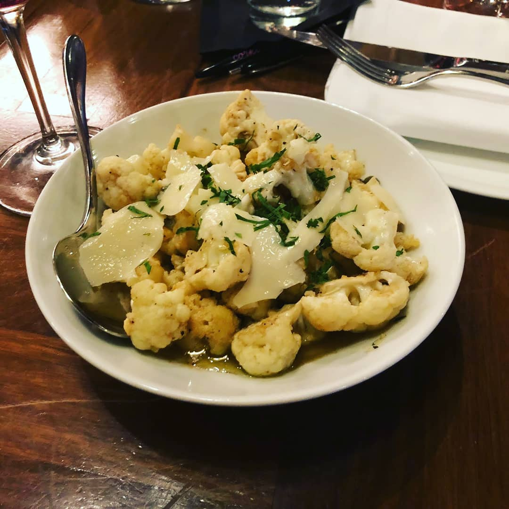
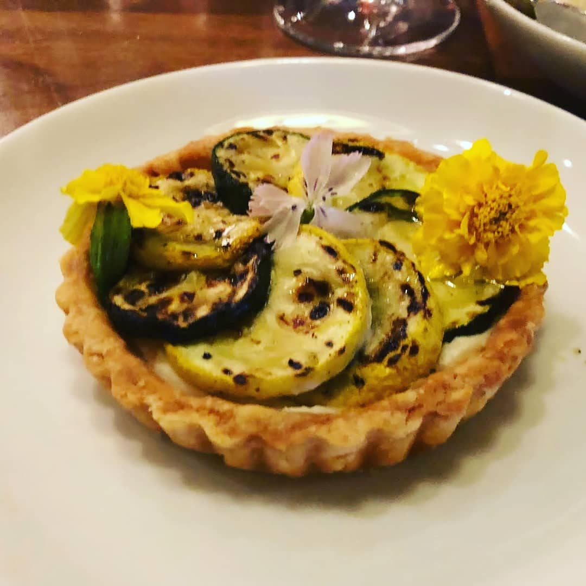
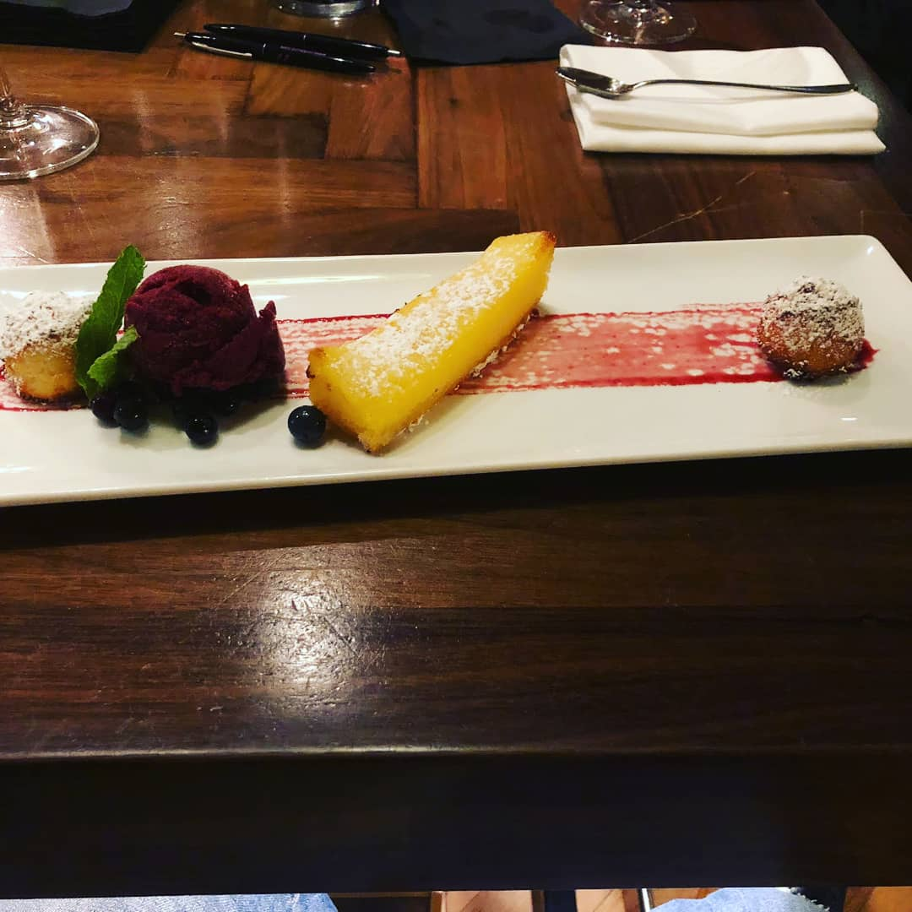

Corkbuzz
A Master Sommelier's Wine Bar

Note: This article was first posted on September 26, 2018 here
Walking into Corkbuzz you can tell it is a bit higher end than the other wine bars I’ve written about so far. What you can’t tell from this first impression is how helpful and knowledgeable the staff are. When I first heard about Corkbuzz and how it was opened by one of the very few female Master Sommeliers in the world, I knew I had to go. We have been a few times, mainly to the cellar side, but this time we got the opportunity to sit down with the new beverage director and Advanced Sommelier Michael to learn more about Corkbuzz and the bar’s goals.
Coming in we knew there were 2 spaces at Corkbuzz, the restaurant and the cellar. Michael filled us in on both. The cellar is aimed to be a casual space where people can go for happy hour after work and have a few snacks such as the $5 bar bites from 4pm-6pm everyday. However, the full menu is also available in the cellar. The cellar also is the main area for purchasing bottles at a retail cost to take home. The restaurant on the other hand is aimed to be a nicer meal out as a date or a girls’ night. Having these 2 separate spaces allows Corkbuzz to have an atmosphere for whatever you are feeling that night.
Michael feels like Corkbuzz stands out both in the wine and food selection as well as the training they give the staff. I have been to many wine bars where I ask about a few wines and the staff has never tasted them. This doesn’t happen at Corkbuzz. The staff are ready to answer questions, provide a taste when necessary, and help you find a wine you love. In addition to training their staff, Corkbuzz also wants to help you learn more about wine. They frequently offer wine classes on varying wine regions, grapes, food pairings, and more.

After talking with Michael we settled in for dinner and attempted a blind tasting flight! The bartender provided us with a tasting sheet to take notes on and figure out what wines we were drinking. We were given 2 reds and 1 white. I won’t give too much away so that you can make your own attempts at blind tasting, but we ended up only getting one right. It was a bit of a bummer for us since we have previously done better at blind tasting, but now there is just more reason to return.
For dinner we went with the Brown Butter Cauliflower, the Risotto, and the Seasonal Tart. We ended with the Lemon Box Dessert that came with coconut macaroons and pinot noir sorbet, suggested by Spencer who works mainly on the Cellar side of Corkbuzz. All the food was amazing! Corkbuzz really showcases an elevated menu that is fresh, simple, and a bit rustic. Everything is made in house, from the ricotta in the risotto to the tart shell to the pinot noir sorbet. The quality shines through and is designed to pair masterfully with the wine selection (which is does). In addition, the menu is designed to be shared, allowing you to taste multiple dishes with friends. Corkbuzz offers full glass pours as well as half glass pours, making it easy to have the exact wine you want with each part of your meal.
  Corkbuzz has two other locations in New York City – one in Chelsea Market and one in Union Square.
Location and hours:4905 Ashley Park Ln J
Charlotte, NC 28210
704-625-1328
Main Dining Room
Dinner Daily: 5pm-10pm
Brunch, Saturday, & Sunday: 11am-3pm
Cellar Sunday - Thursday: 4pm-10pm
Friday & Saturday: 4pm-until
Weekly Tasting Time: There is no set weekly tasting at Corkbuzz, but they offer flights all day long. For something different try out a blind tasting flight for just $15
Pro Tip: Meet up with friends and share some bar bites during happy hour at the cellar while trying out blinding tasting with a flight. If you have a type of wine you know you love then come on a Monday and enjoy the buy one bottle, take on bottle home deal instead.
Events and Specials$5 Bar Bites Every Day 4-6pm in the Cellar, Buy One Take One bottle every Monday, ½ price Champagne every Saturday and Sunday. In addition frequent classes to learn . Check here for most up to date events.
Need to Know: Corkbuzz was started by Laura Maniec, one of only less than 30 female Master Sommeliers in America (one of 249 total Master Sommeliers worldwide). With a passion for wine knowledge and teaching others Corkbuzz offers a wine profile experience. Customers can sit down with one of the Corkbuzz sommeliers and taste 8 wines. The staff will help you to deconstruct your tastes and what you like in particular wines over others. The experience is $35 and lasts about 45 minutes. More information can be found here.
My Wine Selections: Malbec Catena ’15 – Mendoza, Argentina, Riesling Von Winning Winnings ’16 – Pfalz, Germany